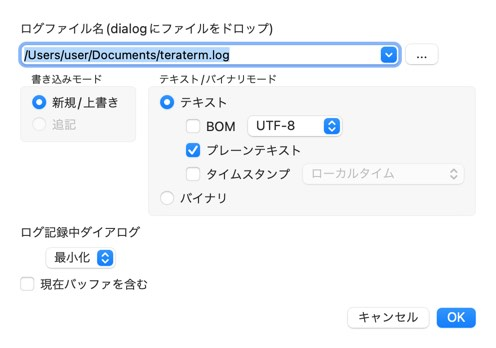

ログを取る
画面に出た文字を、ファイルに残しておけます (ログ)。作業の記録や、あとで見返すときに便利です。
ログを始める
- ログを取りたいウィンドウで、[ファイル] > [ログ...] を選びます。
- 「ログファイル名」に、保存するファイルの名前が入っています。変えるときは「...」ボタンで場所と名前を選びます。
- 同じ名前のファイルがあるときは、「追記」(続きに書く) か「新規/上書き」を選べます。
- 「現在バッファを含む」にチェックを入れると、いま画面に出ている分もログに入ります。
- 「OK」を押すと、ログを取り始めます。

[ファイル] > [ログ...] のダイアログ (ファイル名は例です)
ログを止める・見る
- 止めるときは、[ファイル] > [ログを終了] を選びます。
- 少しのあいだ止めるときは [ログを中断] です。
- 取ったログを見るときは [ログを表示] です。
くわしくは
かんたんマニュアルの目次へ | 次: ファイルを送る・受け取る